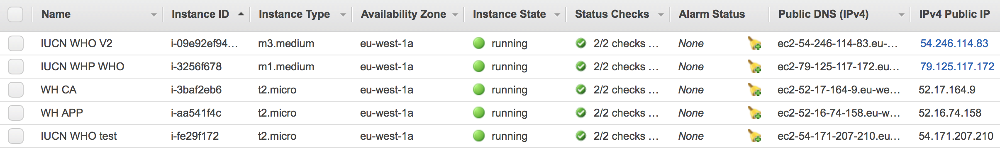
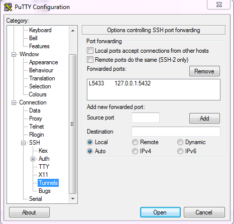
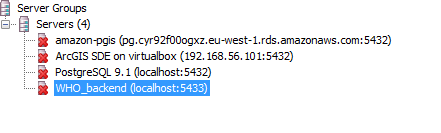
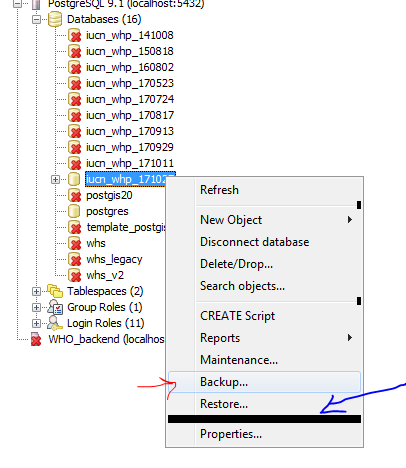
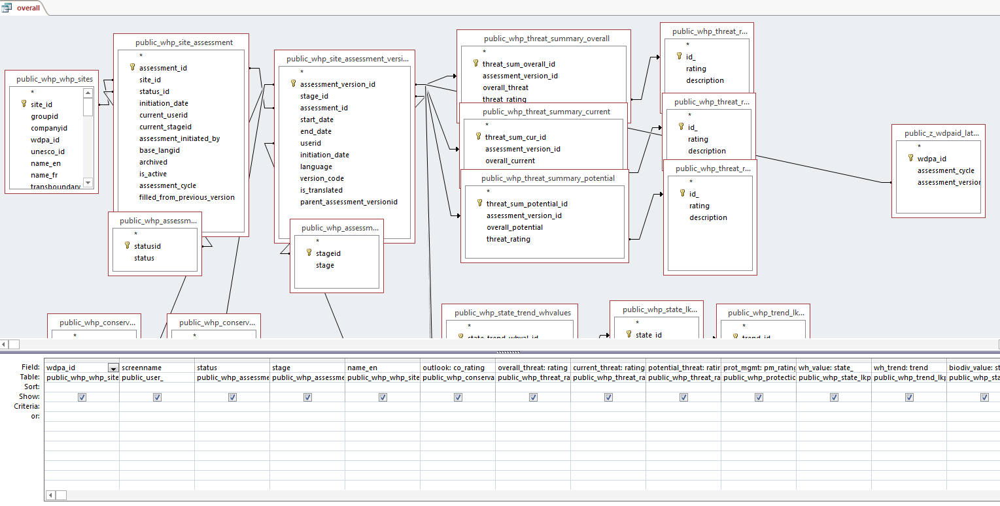
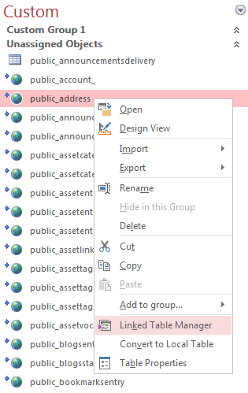
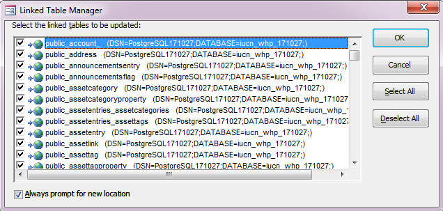
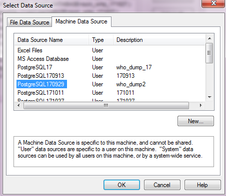

History
I built the first prototype of the Outlook assessment module in Python (Web2Py framework) in early 2012, as proof of concept. The underlying principle is to store the results of assessment in a database so that it could be managed and analysed more easily and effectively. A database approach is the only way to systematically manage the data the project generates.
For the development, RSMI was commissioned to undertake the design, implementation and maintenance of the three modules: assessment, site information, and front-end website for showcasing findings. In hindsight, it was an unrealistic ambition with impossible funds, but at the time the can-do spirit prevailed and I was technically in-mature and inexperienced as to make do with developing everything, rather than checking reality and focusing on the minimally viable product.
It was not a success I had hoped for - part of the reason being that the roles were never clear. I think I was given the role of project management, yet I had no power in making design choices nor allocate funds. My role became that of an inefficient intermediate. During the development process, I led numerous consultations with the team during each milestone, and had constant struggles to accommodate opinions and then feed to the developers. The decision making process was unnecessarily long and painful at times.
Despite the hiccups and constant compromises along the way, a product was developed with all modules, albeit late. The database played a major role to fulfilling the requirement of data analysis. I built the pipelines from database dumps to queries that output assessments, and then turn into usable formats. They powered the first Outlook report.
My role in the second development is technical advisory and I am not involved in the daily management of the development.
Technical architecture
The assessment module was written in Java, a custom-made system that accepts assessments via the web interface and store in a PostgreSQL database. The user facing front end website displays results of assessment and was implemented in Liferay, which during the second development changed to a Drupal based system (written in PHP).
At the moment, there is a disconnection between the two systems: backend assessment and frontend display. The assessment module (backend) and the old website (frontend display) are on one Amazon EC2 instance (instance name: 'IUCN WHP WHO') and the new, updated website resides another (instance name: 'IUCN WHO V2'). The new website used a database dump to migrate content from the old system. By design, the pipeline built by EDW does not reverse the flow of data in the other direction.
The source codes for the systems can be found on GitHub
Administration
As mentioned previously, the assessment module and the front facing website displaying results of assessment are hosted by Amazon (Amazon Web Services, AWS), and the servers are known as EC2 instances or servers. The old and new websites are of the type 'medium' (used to describe the capacity of the server or instance), physically in the 'eu-west-1a' region (in Ireland). Additionally, there is a 'micro' instance for the developers called 'IUCN WHO test', who used it for development and testing. It was decided that this 'micro instance' will be kept for future use.

The two additional 'micro' instances are used for hosting 1) the prototype of the World Heritage comparative analysis , 'WH CA' (seed funding from UNESCO WHC) and 2) some prototypes on the World Heritage Analyses, 'WH APP'.
In order to access these instances with SSH, you will need 'private keys'. The keys are located at (WCMC-PC-01918)
The keys may be revoked in the AWS management console. The login credentials are:
- Yichuan.shi@iucn.org
- (see email)
You may copy and send 'keys' to developers so that they have access to the servers, however, I would highly recommend not giving external people access to our Amazon AWS account.
The management of the instances are beyond the scope of this documentation. The below are the most commonly used features and should be self-explanatory:
- create new instances
- the IP address of the instance (address for access)
- the private keys (key for access)
- the ports that need to be open (TCP22 for SSH, and TCP80 and 443 for HTTP/S)
Database dump
One of the key functions of the system(s) is to enable the extraction and analysis of information for the World Heritage Outlook report. For that purpose, it is important to obtain a copy of the dataset of the live database (the one behind the website, but never work directly on the live database itself!). This is called a database dump.
For security reasons, you will need to SSH tunnel to the instance and forward the remote port to a local one. There is a saved session called WHO_backend that contains necessary connection parameters, including those to forward the remote 5432 port (the database port) to the local 5433 port.

Once you've successfully logged using that saved session, open PgAdmin, the database management tool to connect to your local port 5433, which now points to the remote machine via an SSH tunnel.

You may now select the database from which you'd like to make a dump. Use the 'backup' button (see red arrow) to create a file which holds the content of the database.

On your local machine, create an empty new database and then 'restore' (see the blue arrow) to create an identical copy of the remote database.
This concludes the database dump or 'extraction of data'.
Convert to Access database
Unfortunately the data behind the website is not designed in a format that allows users to gain useful insight about the assessments directly - after all the system has been designed to power the I/O of assessments. As a result, the database dump contains many system tables that do not hold assessment information, and that this information is fragmented and split into many smaller tables. You may refer to the diagram to better understand the relationships of these tables.
For the most commonly used queries, I have built a re-usable Microsoft Access database that connects to the PostgreSQL database. These links must be updated each time a new database dump is made (Matea knows how to do this). By using the Access database as an intermediate, it allows the export to excel spreadsheets, which some find easier to work with.
Below is an example of the 'overall' view in the Access database.

!IMPORTANT!
For the data dump, however, there is one manual step that needs to be performed to assist the analysis before updating the links.
We need to differentiate the most recent assessment ids, and separate them in the two assessment cycles. This is essential to pull out the correct versions of the assessments for analysis. This step can be done in Access but would be much easier in the PostgreSQL database. In your newly restored database, create a view called 'z_wdpa_latest' using the below:
-- View: z_wdpaid_latest
-- DROP VIEW z_wdpaid_latest;
CREATE OR REPLACE VIEW z_wdpaid_latest AS
WITH a AS (
SELECT whp_whp_sites.wdpa_id, whp_site_assessment_versions.assessment_id, whp_site_assessment_versions.assessment_version_id, whp_whp_sites.name_en, whp_site_assessment.assessment_cycle, whp_site_assessment_versions.version_code, max(whp_site_assessment_versions.version_code) OVER (PARTITION BY whp_site_assessment_versions.assessment_id) AS max_code
FROM whp_site_assessment, whp_site_assessment_versions, whp_whp_sites
WHERE whp_site_assessment.assessment_id = whp_site_assessment_versions.assessment_id AND whp_whp_sites.site_id = whp_site_assessment.site_id AND whp_site_assessment.assessment_cycle::text = '2014'::text
), b AS (
SELECT whp_whp_sites.wdpa_id, whp_site_assessment_versions.assessment_id, whp_site_assessment_versions.assessment_version_id, whp_whp_sites.name_en, whp_site_assessment.assessment_cycle, whp_site_assessment_versions.version_code, max(whp_site_assessment_versions.version_code) OVER (PARTITION BY whp_site_assessment_versions.assessment_id) AS max_code
FROM whp_site_assessment, whp_site_assessment_versions, whp_whp_sites
WHERE whp_site_assessment.assessment_id = whp_site_assessment_versions.assessment_id AND whp_whp_sites.site_id = whp_site_assessment.site_id AND whp_site_assessment.assessment_cycle::text = '2017'::text
), combined AS (
SELECT a.wdpa_id, a.assessment_cycle, a.assessment_version_id
FROM a
WHERE a.version_code = a.max_code
UNION
SELECT b.wdpa_id, b.assessment_cycle, b.assessment_version_id
FROM b
WHERE b.version_code = b.max_code
)
SELECT combined.wdpa_id, combined.assessment_cycle, max(combined.assessment_version_id) AS assessment_version_id
FROM combined
GROUP BY combined.wdpa_id, combined.assessment_cycle
ORDER BY combined.wdpa_id, combined.assessment_cycle;
ALTER TABLE z_wdpaid_latest
OWNER TO postgres;
The rationale is to identify the largest value of assessment_version_code for each cycle and for each assessment_id, on the assumption that the later/newer created id should be a larger number. By finding the largest value of the id, it is guaranteed that the latest versions are used, irrespective of the version number and stage, which can be wrong due to bugs in the original design (I shall omit the technical details, but in short the system allows but did not expect certain user behaviours that may result in incorrect version numbers and stages being created)
Once the above is done, you can now update the links in the Access database, using the 'Linked Table Manager' so that they point to the most recent local database as a source

Make sure you tick 'Always prompt for new location', so that you update links for all tables in one go

Create a new data source, here you'll need to specify the details of the newly 'restored' database

Analysis
The analysis is fully documented below: